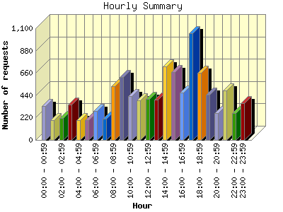
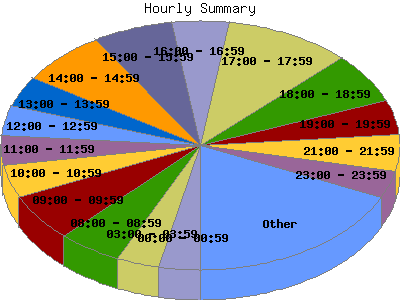

Report generated by Analog 6.0 and Report Magic 2.21
|
Web Server Statistics for "Harish Narayanan (hnarayan) - May 2005" Report generated by Analog 6.0 and Report Magic 2.21 |
The Hourly Summary identifies the level of activity broken down by each hour. Remember that one page hit can result in several server requests as the images for each page are loaded. This summary also compares the level of activity during working hours and after hours as a total for the report time frame.


| Hour | Number of requests | Number of bytes transferred | Percentage of the bytes | Percentage of the requests | |
|---|---|---|---|---|---|
| 1. | 00:00 - 00:59 | 337 | 17.545 MB | 1.96% | 3.32% |
| 2. | 01:00 - 01:59 | 194 | 10.528 MB | 1.18% | 1.91% |
| 3. | 02:00 - 02:59 | 218 | 14.753 MB | 1.65% | 2.15% |
| 4. | 03:00 - 03:59 | 348 | 7.680 MB | 0.86% | 3.43% |
| 5. | 04:00 - 04:59 | 198 | 17.121 MB | 1.91% | 1.95% |
| 6. | 05:00 - 05:59 | 196 | 12.376 MB | 1.38% | 1.93% |
| 7. | 06:00 - 06:59 | 282 | 5.554 MB | 0.62% | 2.78% |
| 8. | 07:00 - 07:59 | 210 | 7.974 MB | 0.89% | 2.07% |
| 9. | 08:00 - 08:59 | 529 | 24.924 MB | 2.78% | 5.21% |
| 10. | 09:00 - 09:59 | 623 | 19.537 MB | 2.18% | 6.13% |
| 11. | 10:00 - 10:59 | 434 | 17.423 MB | 1.95% | 4.27% |
| 12. | 11:00 - 11:59 | 391 | 22.845 MB | 2.55% | 3.85% |
| 13. | 12:00 - 12:59 | 403 | 47.353 MB | 5.29% | 3.97% |
| 14. | 13:00 - 13:59 | 396 | 81.419 MB | 9.10% | 3.90% |
| 15. | 14:00 - 14:59 | 724 | 57.313 MB | 6.40% | 7.13% |
| 16. | 15:00 - 15:59 | 666 | 15.043 MB | 1.68% | 6.56% |
| 17. | 16:00 - 16:59 | 464 | 127.920 MB | 14.29% | 4.57% |
| 18. | 17:00 - 17:59 | 1,051 | 31.390 MB | 3.51% | 10.35% |
| 19. | 18:00 - 18:59 | 664 | 10.063 MB | 1.12% | 6.54% |
| 20. | 19:00 - 19:59 | 448 | 16.130 MB | 1.80% | 4.41% |
| 21. | 20:00 - 20:59 | 268 | 122.250 MB | 13.66% | 2.64% |
| 22. | 21:00 - 21:59 | 487 | 57.935 MB | 6.47% | 4.79% |
| 23. | 22:00 - 22:59 | 268 | 132.437 MB | 14.79% | 2.64% |
| 24. | 23:00 - 23:59 | 359 | 17.708 MB | 1.98% | 3.53% |
| Work Hours (8:00am-4:59pm) | 4,630 | 413.778 MB | 46.22% | 45.58% | |
| After Hours (5:00pm-7:59am) | 5,528 | 481.445 MB | 53.78% | 54.42% | |
This report was generated on June 12, 2005 15:10.
Report time frame May 1, 2005 00:00 to May 31, 2005 23:57.
| Web statistics report produced by: | |
 Analog 6.0 Analog 6.0 |  Report Magic 2.21 Report Magic 2.21 |